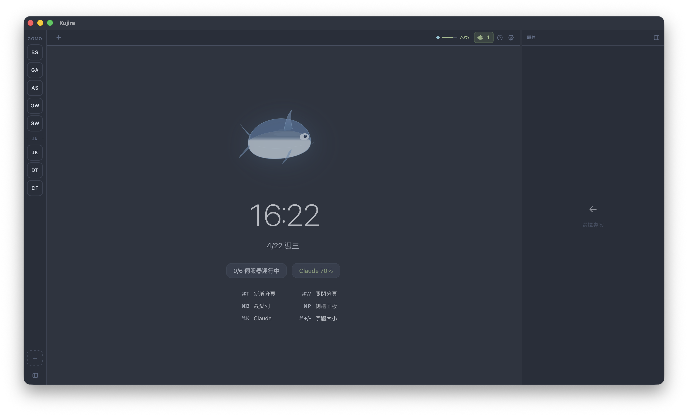

從終端機到 AI 協作，Kujira 把分散的工具整合到同一個視窗。
基於 xterm.js 與 PTY 的原生終端，支援 shell、server log、Claude 監控三種分頁類型。中文 IME 輸入最佳化，自動偵測當前工作目錄。
即時讀取 JSONL 記錄，顯示每日 token 消耗、費用與 quota 狀態。
輸入 ? 問題 讓 Gemini 即時給出 shell 指令建議。
status、commit、branch、push/pull，不離開視窗完成所有 Git 操作。
一鍵啟停開發伺服器，PID 持久化確保 App 重啟後能回收殘留行程。
透過 hooks 機制即時追蹤 Claude agent 狀態（working / idle / pending），每個終端分頁獨立顯示，讓你隨時掌握 AI 工作進度。
無需 App Store，直接下載安裝。
前往 GitHub Releases 下載最新版 Kujira_x.x.x_universal.dmg，支援 Apple Silicon 與 Intel Mac。
由於目前未使用 Apple Developer 帳號簽名，首次執行前需解除系統限制：
將 Kujira.app 拖入 /Applications，雙擊開啟即可使用。後續版本更新會在 App 內自動提示。